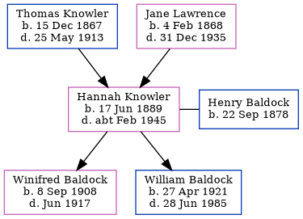

Hannah Mary Baldock (née Knowler) 1889 - c1945
[ Home ] | [ Calendar ] | [ Surnames Index ] | [ Errors ] | [ Family History ]The child of Thomas Knowler (an agricultural labourer) and Jane Lawrence, Hannah Knowler, the first cousin twice-removed on the mother's side of Nigel Horne, was born in Ash, Kent, England on 17 Jun 18891,2,3,4,5, was baptised there at St Nicholas on 5 Oct 1890 and married Henry Baldock (a farm labourer with whom she had 2 children: Winifred Alice and William James) in Eastry, Kent, England around Nov 19077 (Oct/Nov/Dec).
During her life, she was living in Staple, Kent, England on 5 Apr 18911; in Woodnesborough, Kent, England on 31 Mar 19012; in Barnsole, Kent, England on 2 Apr 19119 (the same place as her father had been living on 2 Apr 1871); in St Nicholas-at-Wade, Kent, England on 19 Jun 192110; and at 2 Handville Green Cottages, Bridge, Kent on 29 Sept 19398.
She died c. Feb 1945 in Canterbury, Kent, England4,6.
Parents
- Thomas William was born on 15 Dec 1867
- Jane was born on 4 Feb 1868
Children
- Winifred Alice was born on 8 Sept 1908
- William James was born on 27 Apr 1921
Citations
- 1891 England Census Online publication - Provo, UT, USA: The Generations Network, Inc., 2005.Original data - Census Returns of England and Wales, 1891. Kew, Surrey, England: The National Archives of the UK (TNA): Public Record Office (PRO), 1891. Data imaged from The National (Relation to Head of House: Daughter)
- 1901 England Census Online publication - Provo, UT, USA: The Generations Network, Inc., 2005.Original data - Census Returns of England and Wales, 1901. Kew, Surrey, England: The National Archives of the UK (TNA): Public Record Office (PRO), 1901. Data imaged from the National (Relation to Head of House: Daughter)
- 1911 England Census Online publication - Provo, UT, USA: Ancestry.com Operations, Inc., 2011.Original data - Census Returns of England and Wales, 1911. Kew, Surrey, England: The National Archives of the UK (TNA), 1911. Data imaged from the National Archives, London, England.
- England & Wales, Death Index: 1984-2005 Online publication - Provo, UT, USA: The Generations Network, Inc., 2007.Original data - General Register Office. England and Wales Civil Registration Indexes. London, England: General Register Office. © Crown copyright. Published by permission of the Cont
- England & Wales, FreeBMD Birth Index, 1837-1915 Online publication - Provo, UT, USA: The Generations Network, Inc., 2006.Original data - General Register Office. England and Wales Civil Registration Indexes. London, England: General Register Office. © Crown copyright. Published by permission of the Cont
- England & Wales deaths 1837-2007 - Findmypast
- 1911 England Census Online publication - Provo, UT, USA: Ancestry.com Operations, Inc., 2011.Original data - Census Returns of England and Wales, 1911. Kew, Surrey, England: The National Archives of the UK (TNA), 1911. Data imaged from the National Archives, London, England.
- 1939 Register - Findmypast (was recorded at this address)
- 1911 Census for England & Wales - Findmypast (was age 20 and the wife of the head of the household)
- 1921 Census Of England & Wales - Findmypast (was age 32 and the housewife of the head of the household)
Media
Canterbury Baptisms Transcription - GBPRS-CANT-B-96656017
England & Wales births 1837-2006 - BMD/B/1890/3/AZ/000331/176
England & Wales marriages 1837-2008 - BMD/M/1907/4/AZ/000232/069
1939 Register - TNA/R39/1803/1803I/005/23
England & Wales deaths 1837-2007 - BMD/D/1945/1/AZ/000055/044
England Births & Baptisms 1538-1975 - R_883990600
England Births & Baptisms 1538-1975 - R_937823815
1921 Census of England & Wales - GBC/1921/RG15/04430/0571/02
Family Tree
Map
Generated by ged2site. Last updated on Jul 3, 2024
Known Issues
May have been living with mother on 5 Apr 1891, but the addresses don't match or aren't detailed enough to be sure
May have been living with father on 5 Apr 1891, but the addresses don't match or aren't detailed enough to be sure
May have been living with mother on 31 Mar 1901, but the addresses don't match or aren't detailed enough to be sure
May have been living with father on 31 Mar 1901, but the addresses don't match or aren't detailed enough to be sure
Listed in the residence for 19 Jun 1921, but spouse Henry Baldock is not